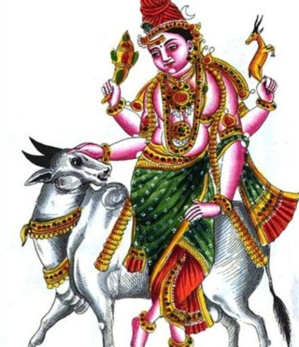
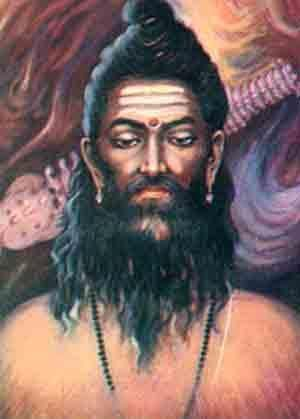
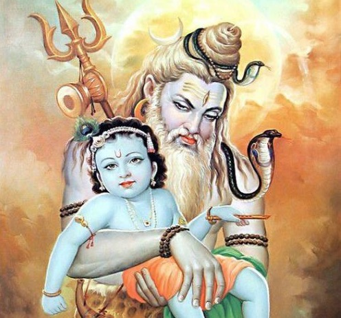

| Serial No. | 17 Avatars |
|---|---|
| 1 | Piplaad Avatar |
| 2 | Nandi Avatar |
| 3 | Veerabhadra Avatar |
| 4 | Sharabha Avatar |
| 5 | Ashwatthama |
| 6 | Bhairava Avatar |
| 7 | Durvasa Avatar |
| 8 | Grihapati Avatar |
| 9 | Lord Hanuman |
| 10 | Vrishabha Avatar |
| 11 | Yatinath Avatar |
| 12 | Krishna Darshan avatar |
| 13 | Bhikshuvarya Avatar |
| 14 | Sureshwar Avatar |
| 15 | Kirateshwar Avatar |
| 16 | Suntantarka Avatar |
| 17 | Brahmachari Avatar |
| 18 | Yaksheshwar Avatar |
| 19 | Avadhut Avatar |


-
Piplaad Avatar
Lord Shiva took birth in the house of Rishi Dadhichi as Piplaad. But the sage is said to have left the house due to the positioning of the Shani. So, Piplaad cursed Shani and caused the planet to fall from its celestial abode. Later, he forgave Shani on a condition that the planet would never trouble anyone before 16 years of age. Hence, worshipping the Piplaad form of Lord Shiva helps to get rid of Shani dosha.
-
Nandi
 Lord Shiva is seen as the protector of the herds. He is depicted as bull faced with four hands. The two hands are seen holding an axe and an antelope
-
Veerabhadra Avatar
Veerabhadra came to be after Goddess Sati immolated herself at the Daksha yagna. Lord Shiva became extremely furious. Lord Shiva plucked a hair strand from his head and threw it on the ground. It was from the hair strand that Veerbhadra and Rudrakali were born. This fierce avatar is said to have broken the sacrificial vessels, polluted the offerings, insulted the priests, and finally cut off Daksha’s head, trampled on Indra, broke the staff of Yama, scattered the gods on every side; then he returned to Kailash.
-
Sharabha Avatar
Shiva Purana narrates that god Shiva assumed the Avatar of Sharabha (part bird part lion) to tame Narasimha – the fierce man-lion avatar of Vishnu. This form is popularly known as Sarabeshwara (Lord Sarabha) or Sharabeshwaramurti.
-
Ashwatthama
Ashwatthama is said to be the “The Vish Purush” sprung out of Shiva after he took Halahal during Samundra Manthan. He was granted a blessing that he would be able to kill oppressive Kshatriyas. He will be born as Bhardwaja’s grandson and be raised as Brahman but attracted to Kshatriyahood. This Vish Purusha was born as Ashwatthama to Drona and Kripi.
-
Bhairava Avatar
Bhairava avatar was created when Lord Brahma lied about his quest for superiority, Shiva took the form of Bhairava and cut off Lord Brahma’s fifth head. Severing a Brahma’s head made Lord Shiva guilty of the crime of killing a Brahmin (Brahma hatya) and hence Shiva had to carry the skull of Brahma for twelve years and roam as a Bhikshatana. In this form, Shiva is said to guard all the Shakti Peethas.
-
Durvasa Avatar
 Lord Shiva had taken the avatar of Durvasa on the earth to maintain the discipline of the universe. Durvasa was a great sage known for his short temper.
-
Grihapati Avatar
Lord Shiva was born to a great devotee of Lord Shiva, Shuchismati was his devoted wife who yearned to birth a child, like Shiva. The child was well versed in all the Vedas yet was informed had to die young due to planetary positions. His journey to Kashi was dampened by Indra but Lord Shiva came to his defense and Lord Shiva blessed Grihapati by saying “even Kaalvajra would not be able to kill you.” Grihapati became very pleased. The Shivalinga which he worshipped, later on, became famous as ‘Agnishwar linga’. Lord Shiva made Grihapati the lord of all the directions.
-
Lord Hanuman
Lord Shiva was so infatuated by the appearance of Lord Vishnu in his form of Mohini during Samudra Manthan that his sem*n was released on the ground. This sem*n was established by the Saptarishis in the womb of Anjani, with the permission of Lord Shiva himself. In this way was born the mighty Hanuman.
-
Vrishabha Avatar
During Samundra Manthan Vishnu tricked all the asuras by creating an illusion of enchanting beauties. When the asuras saw them, they forcibly carried these enchanting beauties to their abode – Patal Lok. After that, they again returned to take control of the Nectar which had been taken by the gods. While Vishnu went to annihilate them in Patal loka he himself got caught up in the Maya and fathered many immoral sons there who created a ruckus for the Gods. It was then Lord Shiva took the form of an ox or Vrishabha and killed all the cruel sons of Lord Vishnu. Lord Vishnu came to fight the ox but after recognizing that it was Lord Shiva’s incarnation, he left the fight and returned to his abode.
-
Yatinath Avatar
Yatinath Avatar – There was once a tribal man named Aahuk. He and his wife were ardent devotees of Lord Shiva. One day Lord Shiva visited them in the form of Yatinath. Their small hut couldn’t accommodate lord Shiva guised as a guest, so Aahuk decided to sleep outside. Unfortunately, he was killed by a wild animal outside. This wife decided to take her own life but was blessed by Lord shiva that they would be born as Nala and Damyanti in the next life and Shiva would unite them.
-
Krishna Darshan avatar
 Lord Shiva took the incarnation of Krishna Darshan avatar to highlight the importance of yagna and rituals in a person’s life. A prince, Nabhag who was kept from his share of the kingdom by his brothers had been asked by his father to educate a sage to get rid of all his attachments to successfully conduct a yajna. When the task is completed the Sage, Angiras pleased hands him all the wealth which is stopped by Krishan Darshan Avataar of Shiva. He showed Nabhag the significance of higher spiritual attainment and salvation and hence gave blessings.
-
Bhikshuvarya Avatar
This incarnation of Lord Shiva protects human beings from all kinds of dangers.
-
Sureshwar Avatar
Lord Shiva and Goddess Parvati appeared in front of the son of sage Vyaghrapaad, Upamanyu disguised as Indra and Indrani respectively. To test his devotion, both of them told Upamanyu to stop doing penance and stop worshiping Shiva. Upamanyu was enraged and refused even after being cursed by them. Shiva and Parvati were satisfied by his total dedication and devotion Shiva promised Upamanyu that he would be present in the vicinity of his hermitage along with Parvati forever. Lord Shiva got the name ‘Sureshwar’ because he appeared in the guise of Indra.
-
Kirateshwar Avatar

Lord Shiva descended in the form of a hunter or Kirat while Arjuna was meditating to kill an Asura named Mooka, disguised as boar. Arjun’s meditation got disturbed by the sound and upon seeing the boar, Arjun and the Kirat struck the boar at the same time with arrows. A fight broke between the Kirat and Arjuna as to who struck the boar first. Arjuna challenged Lord Shiva in the form of Kirat for a duel. Lord Shiva was pleased by Arjuna’s valour and gifted him his Pashupata Astra.
-
Suntantarka Avatar
Lord Shiva took this incarnation to ask the hand of Goddess Parvati in marriage from her father Himalaya.
-
Brahmachari Avatar
It was in Brahmachari Avatar, that Lord Shiva had tested Goddess Parvati’s determination to marry him.
-
Yaksheshwar Avatar
When the deities after defeating the Asuras during Samudra Manthan, had become arrogant, Lord Shiva disliked it as pride was not a quality for gods to possess. Lord Shiva then presented some grass before them and asked them to cut it. It was Lord Shiva’s attempt to destroy their false pride through this divine grass. Hence, nobody could cut the grass and the pride vanished. This form of Lord Shiva then came to be known as Yaksheshwar.
-
Avadhut Avatar
Avadhut Avatar was an incarnation was taken by Lord Shiva to crush the arrogance of Lord Indra.
परमेस्वर अखिलेशवर तांडव प्रिय शशिशेस्वर हर हर हर महादेव शिव शंकर आदि देव विश्वधर विश्वनाथ गंगाधर धीरनाथ हर हर हर महादेव शिव शंकर आदि देव जटजूट चंद्रधारी दीनन के हितकारी हर हर हर महादेव शिव शंकर आदि देव गौरी पति नंदीश्वर शलेश्वर जगदेश्वर हर हर हर महादेव शिव शंकर आदि देव
1.What are the benefits of reciting Har Har Mahadev aarti?
It is believed that the Mahadev aarti can benefit not only the reciter but also the listener. If one listens to the aarti every day, he is freed from all his sorrows and grief. Regular chanting of the aarti removes all the obstacles from your life.It is said that regular reciting of this aarti erases all your sins, calms your mind and frees your soul from all sorts of negative thoughts.The mind also gets free from the negative impacts like lust, ego, and anger.
2.What are the different names of Lord Shiva?
Lord Shiva is also known by names like Shankara, Shiva, Maheshwara, Shambhu, Baghambar, Kailashavasi, Vishweshwara and many more.
3.Which day is dedicated to Lord Shiva and how should you worship God?
Monday is dedicated to Lord Shiva. Devotees must visit a temple and offer prayers, fruits, milk, water on the Shivlinga to please God.
4.What is the significance of offering Sandalwood to Shivlinga?
Sandalwood is cool in nature and by offering sandalwood to Shivlinga, one can expect a peaceful, calm and happy life.